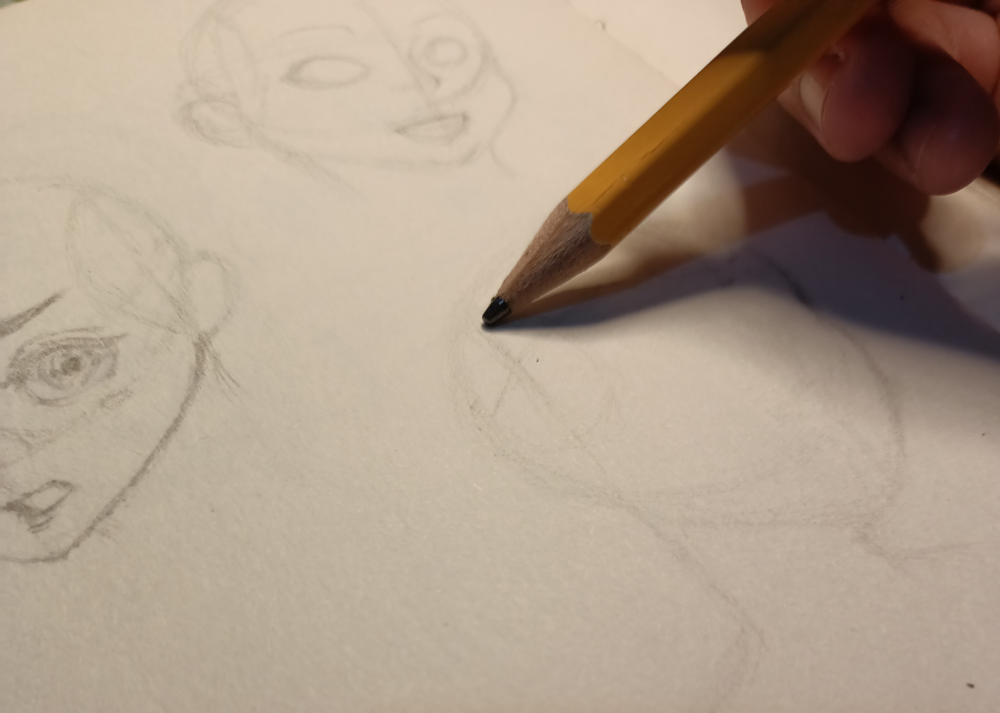

Crocheting

I like crocheting because I can create crafts that are useful to me. I enjoy the process of crocheting because the repetitive pattern I follow feels satisfying. Also, there's no feeling of a rush when I crochet, I can finish it anytime I want if I'm unable to do so on the day I started the project.
Sketching
I sketch when I want to pass the time because I have no other better things to do. I wouldn't say that I'm good at this because, to be honest, I find it so difficult to sketch without any references. I included this as one of my hobby because it's something that I used to enjoy a lot.
Reading

My love for reading started when I was influenced by my tita, who had a collection of pocketbooks. Back when I still had no phone, I used to borrow books from my tita, who also openly shared her love for books. When I finally had a phone, I immediately downloaded Wattpad.
Previous Page Next Page